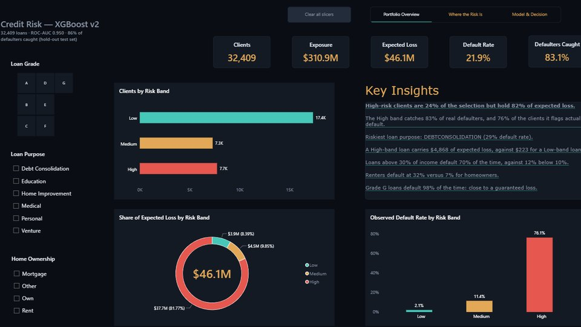

Guilherme Oyakawa de Almeida
Data Analyst with an MSc in Data Science and Imperial College training in Data Analytics. I turn operational and technical data into KPI reporting, predictive models and Power BI dashboards that get used — from BMW prototype quality lines to Samsung logistics to credit-risk models.
Numbers with a business owner attached
I'm a Brazilian-Portuguese data professional who moves between operations and analytics: logistics and IT service delivery in Brazil, vehicle durability testing for Lamborghini and prototype quality control for BMW in Turin, and now data analysis, predictive modelling and BI.
I hold an MSc in Data Science from Rome Business School (NFQ Level 9) and completed a Professional Certificate in Data Analytics from Imperial College Business School (Oct 2025 – May 2026). I'm based in Dublin and hold EU citizenship, so I can work across the EU with no visa sponsorship required.
I like problems with a business owner attached to them: a bank losing money on bad loans, a warehouse missing its SLAs, a condo board flying blind on its budget. Give me the raw data and I'll give you the dashboard that changes the decision.
Off the clock: a lifelong Palmeiras supporter, slowly working through a backlog of sci-fi novels, and prone to disappearing down YouTube rabbit holes about geopolitics.
The stack behind the dashboards
Programming & Data
- Python (Pandas, NumPy, Scikit-learn, XGBoost)
- SQL (PostgreSQL, MySQL, SQL Server)
- Google BigQuery & cloud analytics (AWS, Azure, GCP)
- ETL & data pipeline design
BI & Visualization
- Power BI (DAX, Power Query, star-schema modeling)
- Tableau
- Matplotlib / Seaborn
- Advanced Excel · KPI & management reporting
Machine Learning & Explainability
- Predictive modeling (XGBoost, Random Forest, Ridge, k-NN)
- Clustering (K-Means, Isolation Forest)
- SHAP (explainable AI)
- Hyperparameter tuning (GridSearchCV)
Domain Expertise
- Quality & operational analytics (automotive)
- Financial risk & FP&A
- Supply chain & logistics analytics
- Customer retention & CRM
- Sports market valuation
Tools & Platforms
- Git / GitHub
- Jupyter Notebooks
- Streamlit (app deployment)
- Agile / Scrum (SFPC™ certified)
- CRISP-DM · Root cause analysis · Data quality
Selected work
Five end-to-end projects — from Python and XGBoost models to Power BI dashboards — each taking a messy dataset to a decision someone actually made.

Predicting Credit Default
Rebuilt a loan-default model on 32,409 loans with leakage-free pipelines, a tuned XGBoost, calibrated probabilities and SHAP explanations. It catches 86% of defaulters and cuts simulated losses by 81% versus approving every loan, with Low / Medium / High risk bands and a companion Power BI dashboard.
Explore the full project →Football Transfer Valuation Model
Built an XGBoost regression model on Transfermarkt performance data to estimate a player's fair market value, then shipped it as an interactive Streamlit app so sports directors can price transfers on data instead of hype. Scored the maximum 120/120 on the project assessment.
Explore the full project → POWER BI · STAR SCHEMAFP&A Dashboard for Condominium Management
Replaced a residential condominium's spreadsheet-based accounting with a Power BI financial command center — a star-schema data model and DAX-driven actual-vs-budget variance tracking the board can actually read.
Explore the full project → 5 ML MODELS · OPS DIAGNOSISDecoding an E-Commerce Delivery Crisis
Tested five ML models to predict shipment delays; none cracked 67% accuracy, because the real story was operational, not predictable. Dashboards showed "high-importance" air-freight orders were the most delayed — redirecting the fix from an algorithm to a warehouse audit.
Explore the full project → 60,000+ ORDERS · 4 EU CLUSTERSPredictive Churn Dashboard for Fashion E-Commerce
Master's capstone with Ora Fashion: while a teammate built the churn model in Python, I architected the Power BI command center — RFM segmentation, cohort analysis, and tailored retention plays mapped across four European customer clusters. Led the analytics workstream of a five-member team; assessed above 90%.
Explore the full project →Career roadmap
Data Quality Analyst (Contract) · Coveract SRL
Inspected ~120 BMW X5/X7 prototype door-handle components a day (2,000–3,000 a month), tracking defect rate, pass/fail and rework KPIs in Excel-based controls. Analysed a ~20% average defect rate, traced it to restrictive design tolerances and a recurring assembly defect, and supported corrective actions that cut scrap by ~15%. Took part in 3 quality audits (two by BMW, one by MinebeaMitsumi Global).
Career Break — Personal Goal Pursuit
Moved to Italy while the Portuguese/EU citizenship process was completed, and used the time to earn an MSc in Data Science (Rome Business School, Oct 2023 – Oct 2024) to move into data and technology roles.
Data Reporting Analyst (Contract) · Micla Engineering and Design
Coordinated 2–3 durability test cycles a week for the Lamborghini Revuelto programme and analysed 20–30 tests for failure conditions and reproducibility. Spotted recurring proximity-sensor failure patterns, kept daily defect and corrective-action reports, and reported to about six stakeholders at Lamborghini and Italdesign.
Project Support Coordinator · Zenatur
Coordinated 56–72 Samsung deliveries a month across Brazil, including the Galaxy Z Fold, Z Flip and S23 launches and Brasil Game Show, with a 100% on-time delivery rate. Tracked logistics KPIs, optimised Samsung dashboard reporting and maintained the Excel data feeding Power BI.
Service Delivery Coordinator · T-Systems do Brasil
Supported global IT service delivery between Service Delivery Managers and technical teams, standardising incident reporting and tracking to reduce information silos across international clusters.
Store Manager · Vienna Café
Oversaw inventory and cash-flow control for a family-owned business.
Engineering Intern · Rucker do Brasil
Produced technical drawings in CATIA V5 for Peugeot, Volkswagen, Renault and 3M.
Let's talk about your data
Open to Data Analyst / Business Analyst roles across the EU — remote or Dublin-based. Reachable any time below.